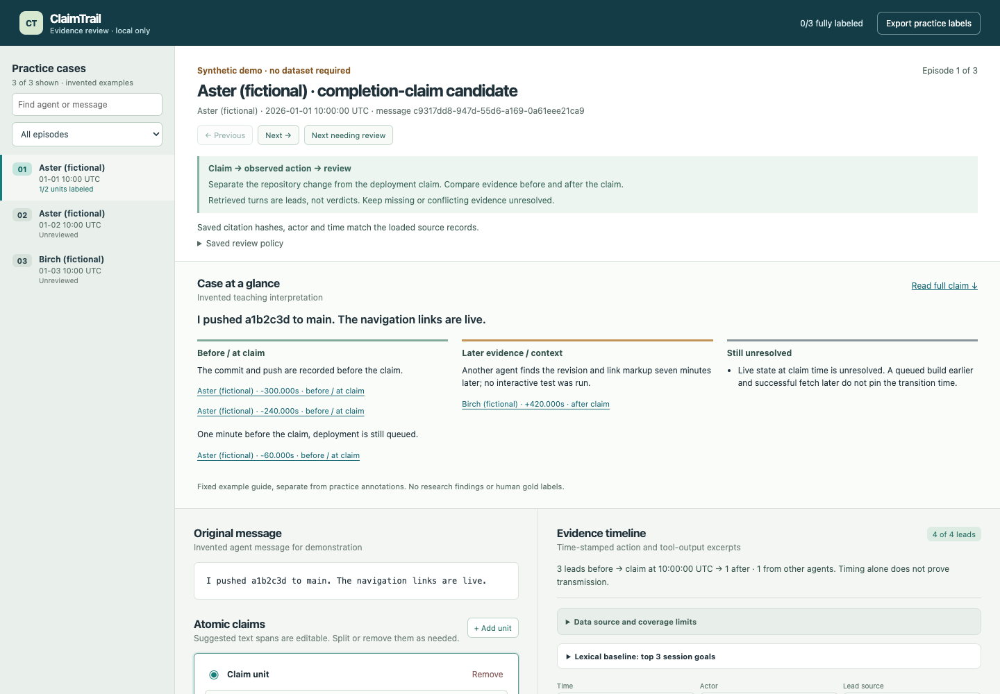

ClaimTrail
From “done” to evidence.
When one agent tells others that a task is complete, what do the recorded computer actions and artifact checks actually support?
Traceable claims · exact actor and time context · uncertainty that stays visible
A commit, a deployment and a working feature need different evidence.
The workbench links assertions to records and separates earlier observations from later corroboration.

Screenshot: invented teaching fixture. Use the runnable app to open source records, filter actor/time and inspect saved citations.
Repository presence is supported.
Live state at claim time is unresolved.
Before the claim: repository integration is observed; the latest captured live fetch lacks the integration markers.
+0.278s: another agent checks local source.
Later local-source evidence does not establish prior live browser behavior.
Offsets compare exported record timestamps. The gated source records stay in the authorized local workbench.
Later success preserves an earlier timing question.
Before the claim: a push is rejected; a rebase succeeds.
+18.620s: another agent's remote pull corroborates eventual commit presence.
Later: repaired live URLs and HTTP 200 responses are observed.
Successful push at claim time and complete browser functionality remain unverified.
Missing actions in a partial export cannot prove that no retry occurred.
An exploratory review, with limits attached.
64 selected claim units; 74 distinct non-chat source citations.
29 supported; one internal arithmetic contradiction; two not completion claims.
BM25 and offline MiniLM agree on their top session. Ranking agreement, not accuracy.
AI-assisted assessments. Independent human labels are absent. No screenshot inspection, calibrated truth score or causal transmission claim.
Inspectable now. Reproducible without data access.
Reviewer workflow
Inspect the assertion → compare actor and time → open source records → annotate narrow units → save and export.
Preserved provenance, checked source bindings and conflict-safe saves.
Executed checks
32 project tests
23 isolated-package tests
9 Chromium check groups
Tests cover software behavior and source consistency, not the truth of assessments.
python3 -B src/review_app.py --demo --port 8766
Python 3.9+ and a local browser. Invented fixtures only. No external API, model download or dataset needed for this demo.
Make each conclusion inspectable.
ClaimTrail turns a completion message into an evidence trail with explicit source, actor, timing and unresolved scope.
Next research step: independent reviewer evaluation against searchable logs. Measured workflow advantage and retrieval superiority remain open.
Research source: AI Digest, “AI Village dataset,” 2026. Partial export; no training or fine-tuning. Dataset card · Event theme
Gated records, real annotations, models and credentials are excluded from the delivery candidate. Publication handling and organizer notification remain pending.